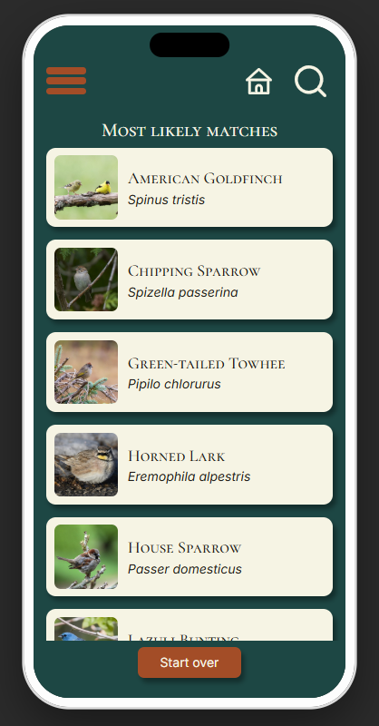
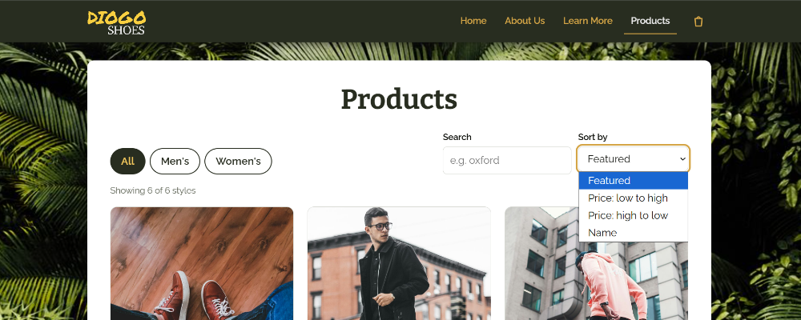
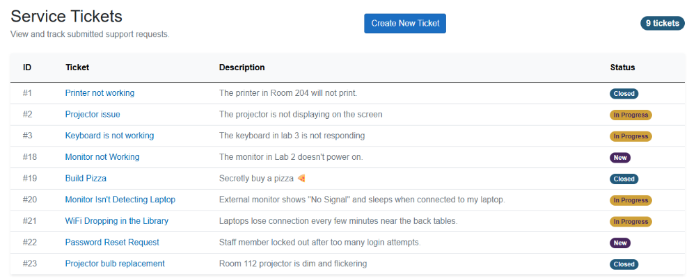

Turn sideways for a bigger room!
Connecting…

A casual backyard birding companion for Utah birders:
ID a bird by what you saw, log your
sightings,
and quiz yourself on species.
Tech: C#, Blazor (.NET 10), Dapper, MySQL
View on GitHub
A responsive e-commerce site for a fictional shoe store called "Diogo Shoes".
Site was built with
plain HTML, CSS, and JS, no added frameworks
Tech: HTML, CSS, JavaScript
View on GitHub
A REST API for creating and tracking IT service tickets through completion, from “New” to “Closed”.
Tech: C#, ASP.NET Core, MySQL, Dapper, Swagger, Blazor
View on GitHubHi, I'm Aza!
My background is in art education, where I spent six years teaching students across a wide range of ages. Teaching taught me to explain things clearly and to design for people with different needs, and that shapes how I approach software development today.
I'm now learning to build full-stack web applications and I’m especially drawn to the design side of software: inclusive and visually appealing interfaces. I’m currently exploring web accessibility best practices (such as color contrast, resizable typography, and keyboard navigation).
When I’m not coding, I enjoy hiking and birding, which is partly why I built Perch, a regional bird identification app.
My resume, last updated November 2026.
Open resume (PDF)